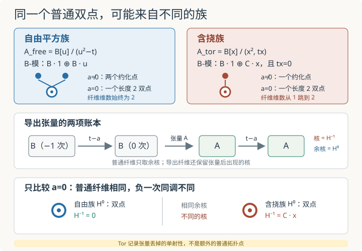

本页目录
基础衔接 15 · 非平坦族与导出纤维：普通纤维漏掉了哪一层？
先修：张量积与 Tor、纤维与基变换。本讲比较两个定义在复仿射直线上的有限代数族：它们在原点有同构的普通纤维，但只有一个族在导出张量中留下负一次同调。目标是亲手算出这份差异，而不是把“导出”当成一句更高级的装饰语。
两个零纤维都是双点，为什么一个族仍然藏着额外故障？
1. 先看普通纤维：原点处确实一模一样
令底环为
闭点 \(p_a=(t-a)\) 的剩余域记作
比较下面两个 \(B\)-代数。
自由平方族来自上一讲：
因为关系式首一，每个元素都能唯一写成 \(f(t)+u g(t)\)，所以
是秩 2 自由 \(B\)-模。
含挠族定义为
关系 \(x^2=0\) 先把每个元素化成 \(f(t)+g(t)x\)，关系 \(tx=0\) 再把 \(g(t)x\) 化成 \(g(0)x\)。因此作为 \(B\)-模，
其中第二个直和项上的 \(t\) 作用为零。可以把 \(x\) 想成只在底空间原点存活的一阶无穷小方向；这只是帮助定位的图像，正式信息仍是 \(x\ne0\)、\(x^2=0\)、\(tx=0\) 三条环关系。
普通闭纤维由张量积，也就是取商得到：
两族的结果是
| 族 | \(a\ne0\) 的普通纤维环 | \(a=0\) 的普通纤维环 | 复维数 |
|---|---|---|---|
| 自由平方族 | \(\mathbb C[u]/(u^2-a)\cong\mathbb C\times\mathbb C\) | \(\mathbb C[u]/(u^2)\) | 始终 2 |
| 含挠族 | \(\mathbb C\) | \(\mathbb C[x]/(x^2)\) | \(1\to2\) |
对含挠族，若 \(a\ne0\)，关系 \(tx=0\) 在纤维里变成 \(ax=0\)，因而 \(x=0\)；若 \(a=0\)，这条关系不再施加新限制，平方零元 \(x\) 就留下来。
特别地，两族在 \(a=0\) 的普通纤维都同构于双数环 \(\mathbb C[\varepsilon]/(\varepsilon^2)\)。但这只说明它们在这个点的普通纤维相同，不说明两个总族相同，也不说明它们在其他纤维相同。
2. 维数跳跃的幕后：张量积破坏了一次单射
在整环 \(B=\mathbb C[t]\) 中，乘以 \(t\) 是单射：
把它与 \(A_{\rm tor}\) 张量，利用 \(B\otimes_BA_{\rm tor}\cong A_{\rm tor}\)，得到
这一次不再是单射，因为非零元素 \(x\) 被送到 \(tx=0\)。更精确地，若把元素写成 \(f(t)+cx\)，则
而 \(B\) 中乘 \(t\) 没有核，所以
平坦模的张量函子必须保持单射；这里已经找到一条被破坏的单射，因此 \(A_{\rm tor}\) 不是平坦 \(B\)-模。注意逻辑方向：一个明确的失败足以否定平坦性；只检查少量没有失败的映射，却不足以证明平坦。
3. 导出张量做的事：不要只收余核，也把核记下来
普通纤维 \(A\otimes_B\kappa_a\) 是右正合张量积的输出。若张量破坏了左端的单射，普通输出只留下余核，看不见丢掉的核。
因为 \(t-a\) 在 \(B\) 中不是零因子，\(\kappa_a\) 有长度为 1 的自由分解
把左边的 \(B\) 放在上同调次数 \(-1\)，右边的 \(B\) 放在次数 \(0\)。用这个自由分解计算导出张量，得到代表复形
其中两项分别位于次数 \(-1,0\)。于是
仍是普通纤维；而
记录张量后失去的单射性。用同调次数记号时，同一个群也常写成 \(H_1\)；本讲采用导出范畴常见的上同调编号 \(H^{-1}\)。
由于这份自由分解只有次数 \(-1,0\) 两项，本例对任意 \(A\) 都有
这不是“所有环的高阶 Tor 都消失”，而是这个特定剩余域在 \(B=\mathbb C[t]\) 上已有长度为 1 的自由分解。
4. 逐项计算含挠族：异常只在原点亮起
在分解 \(A_{\rm tor}=B\oplus\mathbb Cx\) 下，乘以 \(t-a\) 的作用是
因为 \(tx=0\)。
若 \(a\ne0\)，第一项上的乘法没有核，第二项上的标量 \(-a\) 可逆，所以
若 \(a=0\)，第二项上的映射成为零映射，故
普通零纤维看见的是余核中的双点；负一次同调则告诉我们，这个双点来自一个被底参数 \(t\) 杀死的类。两份信息回答不同问题，不能把 \(H^{-1}\) 解释成“又多了一个普通几何点”。

5. 为什么自由平方族没有这份负一次同调？
对自由平方族，
乘以 \(t-a\) 在两个自由直和项上都是单射，所以
对每个 \(a\) 都成立。因而
特别是在 \(a=0\)，
这与含挠族的 \(H^0\cong\mathbb C[x]/(x^2)\) 是同构的普通双点，但后者还有 \(H^{-1}\cong\mathbb Cx\)。所以：
自由平方族的两个点在原点会合，却由自由模保持总长度 2；含挠族则在原点突然多出只在那里存活的方向。真正区分它们的是整个 \(B\)-模结构，不是孤立地凝视一张零纤维图片。
6. 这里的“导出纤维”究竟说到了哪一步？
本讲只做了下列有限而严格的工作：
- 选取 \(\kappa_a\) 的一个自由分解；
- 写出底层两项复形 \([A\xrightarrow{t-a}A]\)；
- 计算它的 \(H^0\)、\(H^{-1}\) 与相应 Tor 模。
这足以展示普通张量遗漏的核，却没有构造完整的导出概形、结构层的高阶乘法、同伦相干数据或一般导出基变换理论。把两项复形画成有限方框也不表示无限维的 \(A\) 被数值截断；方框只是在记录一个由自由分解严格得到的同调计算。
专业计算中，同样的机制会出现在非横截相交、基变换公式的失效与形变问题里。那时 Tor 群可以记录普通交点环未能单独表达的高阶交叠；但“Tor 非零等于几个额外交点”并不是普遍正确的集合论解释。
7. 实验怎样读：先猜核，再看余核
实验提供两个族与实参数 \(a\in[-2,2]\)。这里实区间只是复底空间闭点的一条可视切片，所有向量空间维数仍按 \(\mathbb C\) 计算。
切到自由平方族时，普通纤维维数始终为 2，\(\operatorname{Tor}_1\) 始终为 0。切到含挠族时，实验显示 \(t-a\) 在孤立挠子空间 \(\mathbb Cx\) 上就是标量 \(-a\)：非零 \(a\) 时可逆，原点时变成零，因此普通纤维维数从 1 跳到 2，同时 \(\operatorname{Tor}_1\) 维数从 0 跳到 1。
有限图示只是核、余核和维数的同调账本。它使用解析分解 \(B\oplus\mathbb Cx\)，没有把无限维环 \(A\) 截成有限矩阵来冒充证明。
无脚本后备：
| 族与参数 | \(H^0\) 普通纤维 | \(\dim_{\mathbb C}H^0\) | \(H^{-1}=\operatorname{Tor}_1\) | 挠子空间上 \(t-a\) 的作用 |
|---|---|---|---|---|
| 自由平方族，任意 \(a\) | \(\mathbb C[u]/(u^2-a)\) | 2 | 0 | 没有独立的 \(\mathbb Cx\) 挠直和项 |
| 含挠族，\(a\ne0\) | \(\mathbb C\) | 1 | 0 | 标量 \(-a\)，可逆 |
| 含挠族，\(a=0\) | \(\mathbb C[x]/(x^2)\) | 2 | \(\mathbb Cx\)，维数 1 | 零映射 |
8. 两道迁移题
题一。 仍令 \(B=\mathbb C[t]\)，把含挠族改成
计算每个闭点 \(a\) 的普通纤维与 \(\operatorname{Tor}_1^B(A_2,\kappa_a)\)。原点的 Tor 生成元是 \(x\) 还是 \(tx\)？
先把长度二的挠链写出来
作为 \(B\)-模，
若 \(a\ne0\)，\(t-a\) 在 \(B/(t^2)\) 上可逆；一个显式逆是
因为模 \(t^2\) 计算时
因此非零闭点处核为零，挠直和项在余核中也消失：
在 \(a=0\)，普通纤维为
维数 2。计算负一次同调要找乘 \(t\) 的核。自由项 \(B\) 没有核；在 \(B/(t^2)\) 中，恰好是 \(t\) 的倍数被 \(t\) 杀死。因此
从而
生成元是总环中非零的 \(tx\)，不是 \(x\)，因为 \(t\cdot x=tx\ne0\)，但 \(t\cdot(tx)=t^2x=0\)。所有 \(i\ge2\) 的 Tor 仍因 \(\kappa_a\) 的长度 1 自由分解而为零。
题二。 考察三次自由族
原点纤维是非约化三重点。它是否必然产生非零 \(\operatorname{Tor}_1\)？计算所有闭纤维的普通维数与正次数 Tor。
非约化不等于非平坦
因为 \(u^3-t\) 对 \(u\) 是首一多项式，除法算法给出
所以 \(A_3\) 是秩 3 自由 \(B\)-模。任意 \(t-a\) 在每个自由直和项上的乘法都为单射，故
对所有 \(a\) 成立，所有更高 Tor 也为零。
普通纤维为
复维数始终为 3。若 \(a\ne0\)，\(u^3-a\) 在复数上有三个不同根，纤维环同构于 \(\mathbb C^3\)；若 \(a=0\)，得到 \(\mathbb C[u]/(u^3)\)，只有一个支撑点但长度为 3。特殊纤维非约化，却没有导出负次同调；这正好否定“看见重根就断言非平坦”的错误规则。
速查与资料
| 要问的问题 | 本讲中的可算对象 | 含挠族在原点的答案 |
|---|---|---|
| 普通纤维是什么？ | \(H^0=\operatorname{coker}(t)\) | \(\mathbb C[x]/(x^2)\) |
| 张量丢了哪份单射性？ | \(H^{-1}=\ker(t)\) | \(\mathbb Cx\) |
| 为什么不平坦？ | 乘 \(t:B\to B\) 的单射张量后失效 | \(tx=0\) 但 \(x\ne0\) |
| 是否还有更高 Tor？ | \(\kappa_0\) 的自由分解长度 | 本例 \(i\ge2\) 时为零 |
Tor 由自由分解张量后取同调的定义见 Stacks Project：Tor groups and flatness，平坦性等价于张量保持单射可对照 Flat modules and flat ring maps。导出张量的负次数同调满足 \(H^{-p}=\operatorname{Tor}_p\)，见 Computing Tor；一般 K-flat 语境下的定义见 Derived tensor product。资料核查：2026-09-08。
下一步可把这里的两项复形带到闭嵌入的交中，观察普通张量给出交点环，而 Tor 记录非横截相交留下的额外同调；也可回到纤维与基变换，比较“零纤维非约化”与“总族不平坦”为什么是两件不同的事。
把同一两项分解用到几何相交，继续相交、接触阶与 Tor：相切的长度可以变大，而 Tor₁ 仍为零。